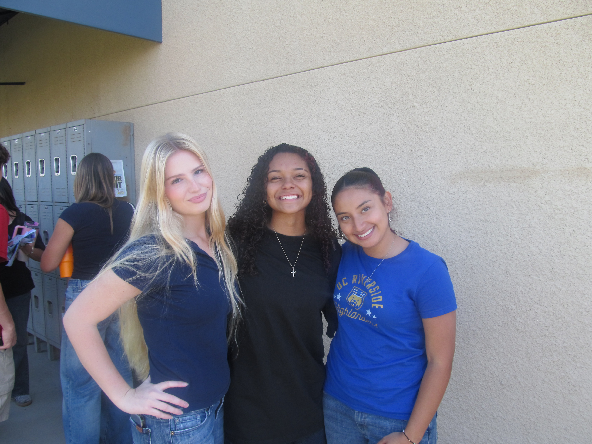

The BEST Trio

Oh god where do I even start?? These are probably like my go to OGs. Like they know everything and they have seen like EVERYTHING. Like the ups and downs the rock bottoms whew and they have heard quite a bit about the stories. Wouldn't trade them for the world. Not sure how I will manage not having lunch with them everyday but yknow, I am sure we'll be able to figure it out.
Words alone can't describe how much each ONE of these friends mean to me, but I'll try...on a separate page of course! But until I make that, I'll talk about this picture right here.
I won't lie, I don't remember WHEN we took this but I know it was senior year, near the end, probably before some type of college day thingy. We went to a prep school so dressing like this was actually a luxury, opposed to the polo shirt and khakis. I had my fuckass camera and was obsessed with taking pictures of EVERYONE because well, its about the last time we'll see each other yknow? So this was one of them.
What kills me is this was random too, there are so many other photos. But I think that's what makes it so beautiful. When I took this picutre it was just that, a picture. Now it's a memory. A little cliche and on the nose? Sure. But it dosen't change how great it is seeing them all together, in a moment that will never quite exist again. Love u guyz